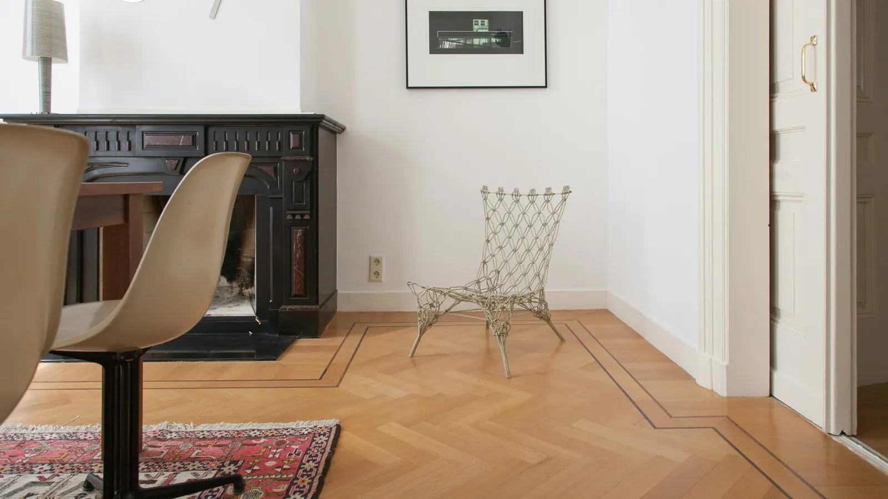
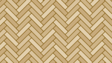
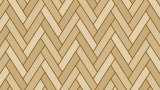
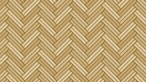

In het kort
- Bij een visgraatvloer liggen de planken loodrecht op elkaar, onder een hoek van 45 graden.
- Varianten zijn de Hongaarse punt, de Weense punt en de dubbele visgraat.
- PVC is slijtvast, onderhoudsvriendelijk en geluiddempend.
- Wij leggen een visgraat PVC vloer vanaf € 79,95 per m².
Het visgraatpatroon zien we in veel huizen en panden terug. Niet gek, want het geeft een ruimte een rustige, klassieke en toch moderne uitstraling. Vroeger werd een visgraatvloer alleen in hout gelegd. Tegenwoordig kan het ook met PVC. We zetten de mogelijkheden voor u op een rij.
PVC heeft veel voordelen
Waarom zou u voor een PVC vloer kiezen als u een visgraatpatroon wilt? Een begrijpelijke vraag, want het karakter van echt hout is moeilijk na te bootsen. Door de ontwikkelingen in de vloerenbranche is een PVC vloer met houtlook nu bijna niet meer van een houten vloer te onderscheiden. En PVC heeft veel voordelen:
- Zeer slijtvast. De sterke toplaag zorgt dat de vloer lang meegaat en niet snel beschadigt. Ideaal voor een huishouden met kinderen of huisdieren.
- Onderhoudsvriendelijk. Stofzuigen en af en toe dweilen is genoeg. Er komt geen schuurmachine aan te pas, dat scheelt tijd en kosten.
- Geluiddempend. Daardoor is PVC een goede keuze voor een appartement of een gehorige woning.
Wat is een visgraatpatroon?

Bij een standaardvloer liggen de planken evenredig naast elkaar. Bij het visgraatpatroon gaat dat anders: de planken liggen loodrecht op elkaar, onder een hoek van 45 graden. Zo ontstaat een trapsgewijs patroon, zoals we het kennen uit de herenhuizen van vroeger.
Variaties op het visgraatpatroon
Door de populariteit van de visgraatvloer worden ook de variaties steeds bekender. We lichten ze kort toe.
Hongaarse punt
Wilt u de luxe uitstraling van visgraat, maar ook een rustige vloer? Kies dan de Hongaarse punt. De planken liggen hier niet loodrecht op elkaar, maar onder een hoek van 45 of 60 graden, en de punten sluiten op elkaar aan. Het grootste verschil zit in de belijning en de groeven: de lijnen zijn strakker, waardoor er meer rust in het patroon komt.
Weense punt

De Weense punt lijkt veel op het visgraatpatroon. De vloer wordt op dezelfde manier gelegd, maar onder een hoek van 60 graden in plaats van 45 graden.
Dubbele visgraat

Wilt u het klassieke visgraatpatroon een twist geven? Vraag dan naar een dubbele visgraat. Hierbij worden de planken per twee gelegd in plaats van één voor één.
Visgraat PVC vloer inclusief leggen
Overtuigd van een PVC visgraatvloer, maar wilt u hem niet zelf leggen? Heel begrijpelijk, want het is geen eenvoudige klus. Het team van Van Dinther Woninginrichting vertelt u graag over de mogelijkheden en legt de vloer bij u thuis. Onze specialisten leggen uw visgraatvloer vanaf € 79,95 per m².
Visgraat PVC bekijken in onze showroom
Woont u in Den Bosch of omstreken en wilt u met eigen ogen zien wat er kan met een PVC vloer? Maak vrijblijvend een afspraak en kom langs in onze showroom. Onze specialisten staan voor u klaar met een kop koffie en beantwoorden al uw vragen.